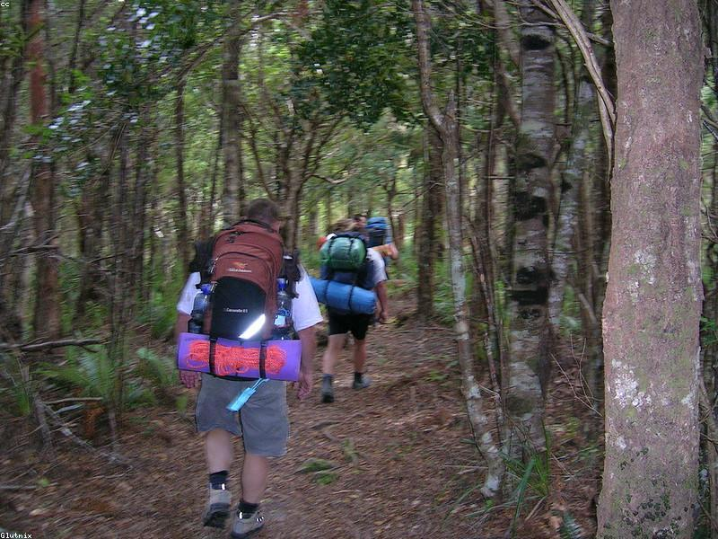

Exploration
We encourage people to discover new trails, landscapes, and outdoor experiences.
TrailScout was created to make finding the right hiking trail easier. Our goal is to help hikers compare trail difficulty, distance, location, and features before heading outdoors.

TrailScout began as a simple idea to create one place where hikers could quickly find trails that matched their experience level and interests. Planning a hike should be a simple task, even when someone is using their phone for navigation and information.
The app presents trail information and allows users to filter and sort hiking trails according to their preferences.
We encourage people to discover new trails, landscapes, and outdoor experiences.
We provide clear trail difficulty, distance, and hiking information to support better planning.
We help hikers share trail ideas and build a welcoming outdoor community.
Contact us to ask a question, report incorrect trail information, or suggest a hike that should be added to TrailScout.